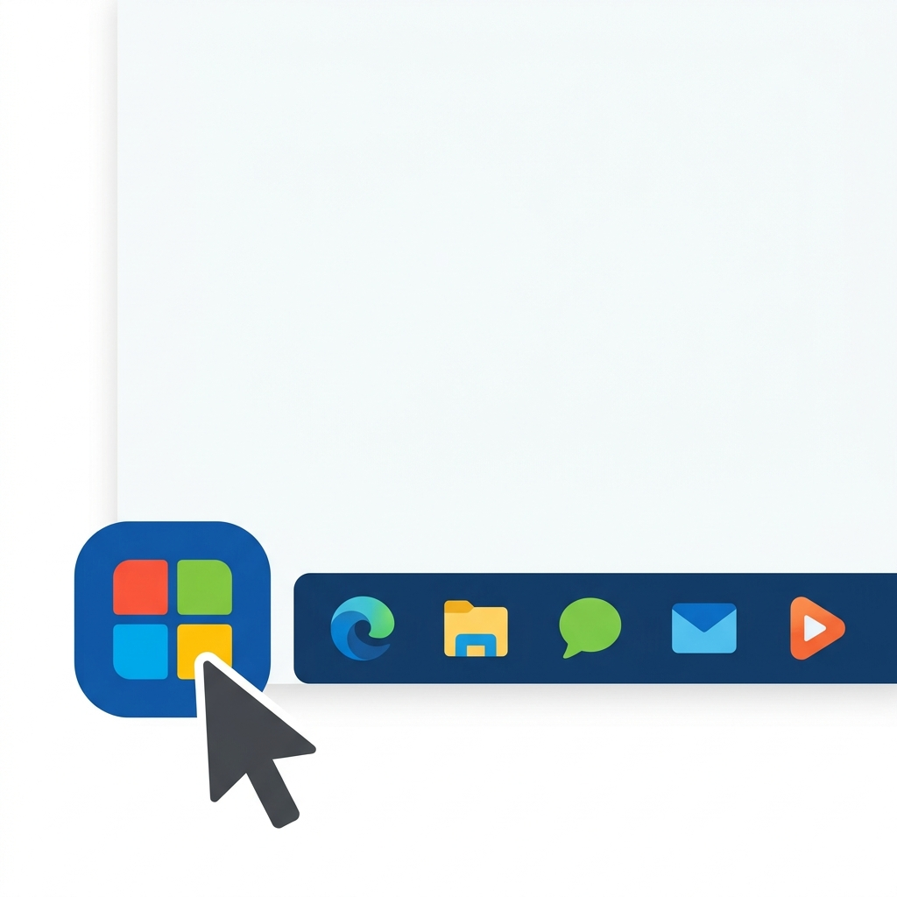
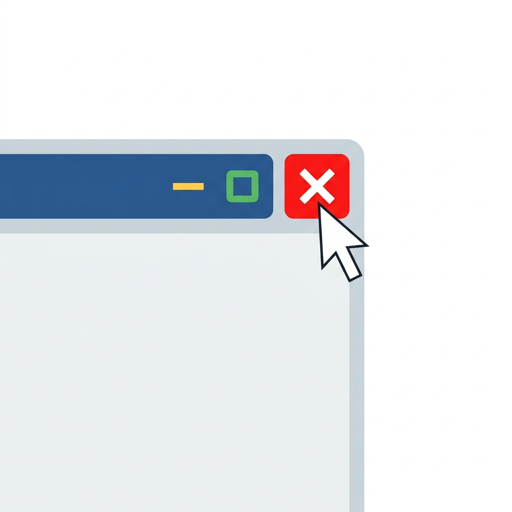

Resposta rápida para você:
O Windows é o "gerente geral" do seu computador. Ele é o programa principal (chamado de sistema operacional) que faz a máquina ligar, mostra imagens na tela, reconhece o seu mouse e teclado, e permite que você abra a internet ou digite textos. Sem ele, a tela do computador ficaria toda preta e você não conseguiria fazer nada.
O que é o Windows de forma simples?
Imagine que o seu computador (a parte física: teclado, tela, mouse) seja um carro. Se você tentar dirigir um carro sem o motorista, ele não sai do lugar.
O Windows é exatamente o motorista desse carro. Ele é um Sistema Operacional, uma palavra técnica que significa apenas: "O programa que faz as peças físicas obedecerem aos seus comandos". É o Windows que traduz o clique do seu mouse em uma ação visível na tela.
Para que serve o Windows?
A utilidade do Windows no dia a dia é permitir que você realize suas tarefas com facilidade. Ele serve para:
- Ligar o computador e apresentar uma tela inicial amigável;
- Organizar seus documentos, fotos e músicas em pastas;
- Permitir que você acesse a internet;
- Permitir que você desligue a máquina com segurança.
Por que a tela se chama Windows?
A palavra Windows em inglês significa Janelas. O sistema ganhou esse nome porque tudo que você abre no computador (um texto, a internet, uma foto) aparece dentro de um quadrado ou retângulo na tela, parecendo uma janela que você pode abrir, fechar ou mudar de lugar.
Como funciona o Windows: As 3 partes principais
Quando você liga o computador, a tela que aparece é gerenciada pelo Windows. Você só precisa conhecer três partes fundamentais para nunca mais se perder:
1. A Área de Trabalho (Desktop)
É a tela principal que aparece assim que o computador termina de ligar. Imagine que é o tampo da sua mesa de trabalho na vida real. Lá você pode colocar as ferramentas que mais usa (que no computador se chamam "ícones").
2. A Barra de Tarefas
Fica na parte inferior (embaixo) da tela de ponta a ponta. Lá aparecem os programas que estão abertos no momento, além do relógio e da internet no canto direito.
3. O Menu Iniciar
Este é o botão mais importante. Fica geralmente no canto inferior esquerdo (tem o desenho de uma janelinha). É por ele que você "inicia" as coisas: abre programas, procura arquivos e, principalmente, desliga o computador do jeito certo.

Dica de Ouro: Se você se perder, basta clicar no Menu Iniciar. Ele é o seu ponto de partida para tudo.
O que fazer se der errado? (Erros Comuns)
Problema: Cliquei em algo e a tela sumiu ou encheu de janelas, o que eu faço?
Solução: Mantenha a calma. Procure no canto superior direito da "janela" um botão com um "X" (geralmente vermelho) e clique nele. Isso fechará a janela que abriu sem querer. Se não achar, olhe na Barra de Tarefas (lá embaixo), clique na janela aberta e feche.

Problema: Tentei desligar puxando o fio da tomada. Pode?
Solução: NUNCA faça isso. Puxar o fio da tomada no computador de mesa pode corromper o Windows e apagar seus arquivos. Vá no Menu Iniciar, procure pelo botão de Energia e escolha "Desligar".
Checklist Rápido: Você aprendeu?
- Entendi que o Windows é o sistema principal do computador.
- Sei que "Windows" significa janelas.
- Entendi que a Barra de Tarefas fica embaixo e mostra o que está aberto.
- Sei onde fica o botão Iniciar.
- Aprendi que nunca devo desligar puxando da tomada.
Perguntas Frequentes (FAQ)
Preciso comprar o Windows?
Na grande maioria das vezes, quando você compra um notebook ou computador novo em lojas, o Windows já vem instalado de fábrica.
Qual a diferença entre Windows 10 e Windows 11?
São apenas "versões" diferentes. Pense neles como o modelo de um carro. O Windows 11 é mais moderno e tem botões mais arredondados, mas a forma de usar e a lógica (Área de Trabalho, Menu Iniciar) são iguais ao Windows 10.
O que acontece se o computador não tiver Windows?
Ele precisará de outro sistema operacional (como o Linux) para funcionar. Sem nenhum sistema, o computador fica apenas com uma tela preta cheia de letras e não serve para o uso no dia a dia.
Próximo Passo
Agora que você já sabe como a tela do computador funciona, o próximo passo para ganhar independência é dominar a movimentação da setinha na tela. Recomendo que você leia nosso guia sobre Como usar o mouse e o teclado corretamente.